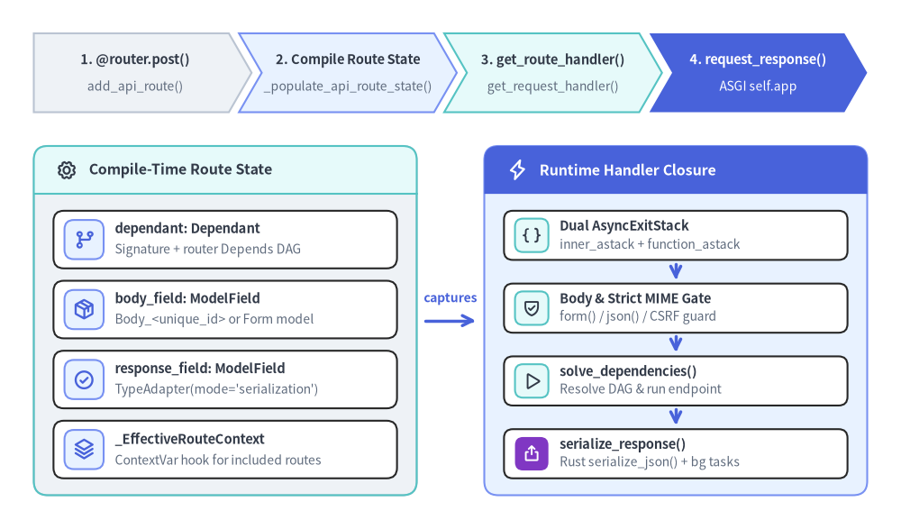
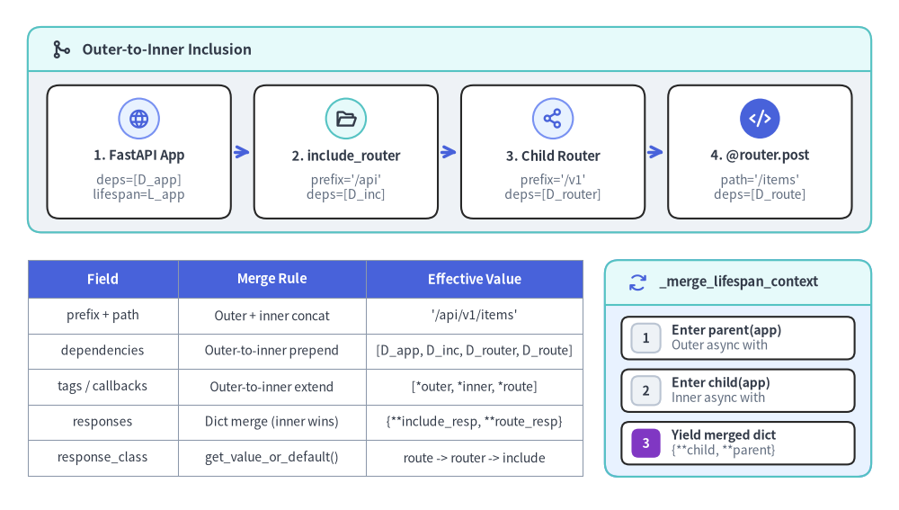

APIRouter, APIRoute & Handler Closure Compilation
FastAPI's routing engine (fastapi/routing.py) operates as an ahead-of-time closure compiler built atop Starlette's Router and Route primitives. Rather than reflecting over Python type annotations or rebuilding Pydantic validators on every HTTP request, APIRouter and APIRoute inspect endpoint signatures once during registration (or lazy router inclusion), synthesize dedicated Dependant graphs and ModelField adapters, and freeze those artifacts inside a specialized async def app(request: Request) -> Response closure wrapped by FastAPI's dual-stack request_response() ASGI adapter.

1. Compile-Time State Synthesis (APIRoute.__init__ & _populate_api_route_state)
Every HTTP verb decorator on APIRouter (@router.get(), @router.post(), @router.put(), @router.delete(), @router.patch(), @router.options(), @router.head(), @router.trace()) delegates through APIRouter.api_route() to APIRouter.add_api_route(). add_api_route() merges the router's immediate prefix, tags, dependencies, responses, callbacks, default_response_class, generate_unique_id_function, and strict_content_type with the decorator's arguments, then instantiates route_class (APIRoute by default).
Inside APIRoute.__init__, FastAPI delegates state construction to _populate_api_route_state(route, path, endpoint, ...) so that both direct APIRoute instances and lazy _EffectiveRouteContext clones share identical compilation logic:
| Compiled Attribute | Producer Function | Role in FastAPI v0.162.2 |
|---|---|---|
path_regex, path_format, param_convertors |
starlette.routing.compile_path(path) |
Compiles {param:type} segments into a regex, normalized OpenAPI path template, and Starlette convertors. |
unique_id |
operation_id or generate_unique_id(route) |
Deterministic identifier (<name><path_format>_<method>) used for OpenAPI operationId and synthetic Pydantic model names. |
dependant, _embed_body_fields |
_build_dependant_with_parameterless_dependencies() |
Calls get_dependant(path=path_format, call=endpoint, scope="function"), prepends router/decorator Depends at index 0 in reverse so outer-to-inner declaration order is preserved, flattens body_params, and computes _should_embed_body_fields(). |
body_field |
_get_body_field() |
Returns the single ModelField directly when _embed_body_fields=False, or synthesizes a composite Body_<unique_id> Pydantic model (create_body_model) for multi-parameter JSON bodies, Body(embed=True), or Form/File uploads. |
response_field, response_fields |
create_model_field(..., mode="serialization") |
Wraps response_model (or inferred return annotation, unless issubclass(ret, Response)) in Response_<unique_id> using Pydantic v2's TypeAdapter in "serialization" mode; builds per-status Response_<code>_<unique_id> fields for responses={...}. |
stream_item_field, is_sse_stream, is_json_stream |
get_stream_item_type() + create_model_field() |
For yield generator endpoints, extracts T from AsyncIterable[T] / Iterable[T] (excluding ServerSentEvent) into StreamItem_<unique_id> (mode="serialization") and sets streaming dispatch flags. |
app |
request_response(self.get_route_handler()) |
Freezes the compiled route handler closure inside FastAPI's ASGI Scope/Receive/Send adapter. |
[!NOTE] Removal of Legacy
secure_cloned_response_field: In Pydantic v1 versions of FastAPI,APIRoutemaintained bothresponse_fieldand a clonedsecure_cloned_response_field(create_cloned_field) to strip arbitrary sub-fields safely. Because FastAPIv0.162.2runs exclusively on Pydantic v2 (PydanticV1NotSupportedErrorrejects v1 models increate_model_field()),v2.ModelField(mode="serialization")compiles a single Rust-backedTypeAdapterthat enforces field filtering, aliases, and validation natively without cloning models.
2. The Runtime Handler Closure (get_request_handler & request_response)
2.1 Dual AsyncExitStack & Swallowed-Exception Guard in request_response()
APIRoute.__init__ finishes with self.app = request_response(self.get_route_handler()). FastAPI vendors and customizes Starlette's request_response() in fastapi/routing.py to manage two distinct AsyncExitStack lifecycles inside scope before delegating exception translation to Starlette's wrap_app_handling_exceptions(app, request):
scope["fastapi_inner_astack"](Outer Request Stack): Encompasses bothresponse = await f(request)andawait response(scope, receive, send). Dependencies withyieldusingscope="request"(the default for request-wide resources such as database sessions consumed by streaming responses) remain alive until every response byte has been transmitted over ASGIsend.scope["fastapi_function_astack"](Inner Function Stack): Encloses onlyresponse = await f(request). Dependencies explicitly configured withDepends(..., scope="function")exit immediately after the endpoint returns itsResponseobject, before body streaming begins.response_awaitedIntegrity Check: A boolean flagresponse_awaitedis set toTrueonly afterawait response(scope, receive, send)completes. Ifrequest_stack.__aexit__suppresses an exception (because a buggyyielddependency caughtExceptionin a bareexcept:block without re-raising) beforeresponsewas ever awaited, FastAPI explicitly raisesFastAPIError("Response not awaited...")instead of silently hanging the HTTP connection.
2.2 Body Parsing, Strict Content-Type CSRF Gate & Dependency Solving
APIRoute.get_route_handler() passes the route's compiled attributes into get_request_handler(), which precomputes five invariants outside the per-request hot path (is_coroutine, is_body_form, actual_response_class, is_sse_stream, and actual_strict_content_type) and returns async def app(request: Request) -> Response:
- Multipart & Form Cleanup (
fastapi_middleware_astack): The closure fetchesfile_stack = request.scope.get("fastapi_middleware_astack")(installed byAsyncExitStackMiddleware). Whenbody_fieldis present andis_body_formisTrue(isinstance(body_field.field_info, params.Form), which covers bothForm()andFile()sinceFilesubclassesForm), FastAPI awaitsbody = await request.form()and pushesbody.closeontofile_stackso temporarySpooledTemporaryFilehandles are guaranteed to close even if validation fails. - JSON Parsing & Strict Content-Type CSRF Defense: For non-form
body_fieldroutes, FastAPI readsbody_bytes = await request.body(). When non-empty, it inspectsrequest.headers.get("content-type")viaemail.message.Message:- If
Content-Typeisapplication/jsonorapplication/*+json(such asapplication/problem+jsonorapplication/vnd.api+json), it parsesawait request.json(). - If
Content-Typeis missing, FastAPI checksactual_strict_content_type(Trueby default). WhenTrue, headerless payloads are left as rawbytes(causing Pydantic dict/model validation to reject them with422), preventing browsers from exploiting simplefetch()requests withoutContent-Typeto bypass CORS preflight checks againstlocalhostservices. Settingstrict_content_type=Falserestores permissive JSON parsing for headerless legacy clients. - Malformed JSON raises
json.JSONDecodeError, which FastAPI converts intoRequestValidationErrorwithtype="json_invalid", byte offsetloc=("body", e.pos), and cached source metadata from_extract_endpoint_context(dependant.call), firing the_validation_failed()telemetry hook.
- If
- Dependency DAG Resolution: Inside
_operation(name="dependencies", function=dependant.call),solve_dependencies()validates path, query, header, cookie, and parsedbodyvalues while resolving sub-dependencies onfastapi_inner_astack. Any accumulatedsolved_result.errorsraiseRequestValidationErrorprior to endpoint invocation.
2.3 Endpoint Execution, Rust serialize_json Fast Path & BackgroundTasks Merging
When solved_result.errors is empty and the route is not a streaming generator, get_request_handler() executes the standard request-response branch:
run_endpoint_function(): Separated into a top-level helper for profiler visibility. Async endpoints execute directly viaawait dependant.call(**values)inside_operation(name="endpoint"); synchronousdefendpoints offload viaawait run_in_threadpool(_run_sync_endpoint, function=dependant.call, arguments=values)so blocking I/O does not stall the event loop while preserving OpenTelemetry context.- Direct
ResponseReturn Bypass: Ifisinstance(raw_response, Response)isTrue, FastAPI skipsserialize_response()completely. Ifraw_response.background is None, it attachessolved_result.background_tasks(preserving tasks queued via injectedBackgroundTasksdependencies) and returnsraw_responseuntouched. - Pydantic Rust
dump_jsonFast Path vs Customresponse_class: Otherwise,_build_response_args()mergesbackground_tasksandstatus_code(allowingsolved_result.response.status_codemutated inside dependencies or the endpoint to override the decorator'sstatus_code). FastAPI then evaluates:use_dump_json = response_field is not None and isinstance(response_class, DefaultPlaceholder): WhenTrue,serialize_response(..., dump_json=True)validatesraw_responseviafield.validate()(offloaded torun_in_threadpoolfor sync endpoints, raisingResponseValidationErroron contract mismatch) and callsfield.serialize_json(...). Pydantic's Rust core (pydantic-core) emits UTF-8 JSONbytesdirectly, which FastAPI wraps in a bare StarletteResponse(content=content, media_type="application/json", **response_args)—bypassing intermediate Pythondictallocation andjson.dumps()!- Fallback Serialization (
use_dump_json=False): Callsfield.serialize(...)(producing Python primitives) orjsonable_encoder(raw_response)whenresponse_field is None, passing the result toactual_response_class(content, **response_args)(e.g.,ORJSONResponseor defaultJSONResponse).
- Body Stripping & Header Merging: If
not is_body_allowed_for_status_code(response.status_code)(1xx,204,205, or304),response.bodyis cleared tob"". Finally,response.headers.raw.extend(solved_result.response.headers.raw)appends everySet-Cookieand custom header written to the injectedResponseparameter.
3. Nested include_router(), _EffectiveRouteContext & Lifespan Composition
In FastAPI v0.162.2, APIRouter.include_router(router, ...) no longer eagerly clones APIRoute objects at call time. Instead, after asserting against self-inclusion (self is not router) and cyclic router graphs (not router._contains_router(self)), it records an immutable _RouterIncludeContext.for_include(...) inside a _IncludedRouter(original_router=router, include_context=include_context) node appended to self.routes, increments self._routes_version, and composes lifespans. This lazy architecture ensures that routes registered on a child APIRouter after include_router() is called are still discovered automatically when _get_routes_version() changes!

When a request arrives (or OpenAPI iterates routes via iter_route_contexts()), _IncludedRouter.effective_candidates() acquires _effective_routes_lock, combines nested _RouterIncludeContext layers via .combine(), and builds one _EffectiveRouteContext per included route via _EffectiveRouteContext.from_api_route():
- Outer-to-Inner Dependency Ordering:
_RouterIncludeContextconcatenatesdependencies=[*parent_router.dependencies, *(include_dependencies or [])]down every nesting level, andfrom_api_route()appends*route.dependencies. Inside_build_dependant_with_parameterless_dependencies(), FastAPI iteratesfor depends in dependencies[::-1]: dependant.dependencies.insert(0, ...), placing all parameterless router/decorator dependencies ahead of the endpoint's signatureDepends(...)parameters in exact outer-to-inner order (FastAPI-> outerAPIRouter->include_router()-> innerAPIRouter->@router.post(dependencies=...)-> endpoint function signature). - Precedence of Defaults & Responses:
responsesmerges via{**include_context.responses, **route.responses}so inner status definitions override outer defaults.response_class,generate_unique_id_function, andstrict_content_typeresolve viaget_value_or_default(route_val, included_router_val, include_context_val), picking the most specific non-DefaultPlaceholdersetting.deprecatedcombines with logicalor, whileinclude_in_schemacombines with logicaland. _merge_lifespan_context(original_context, nested_context): Atinclude_router()time, legacyon_startup/on_shutdownlists are copied andself.lifespan_contextis wrapped in a nested@asynccontextmanager. During ASGI lifespan startup,original_context(app)enters first (outer) andnested_context(app)enters second (inner), tearing down in reverse LIFO order on shutdown. If either yields a state mapping, FastAPI yields{**(maybe_nested_state or {}), **(maybe_original_state or {})}so parent lifespan keys take precedence over nested router keys.
4. Source-Verified Inspection & Custom APIRoute Wrapping
4.1 Inspecting Compiled APIRoute Fields, RouteContext & Lifespan Merging
The following snippet inspects the compiled ModelField artifacts on a raw APIRoute, composes a 3-level router hierarchy, reads the effective route metadata through iter_route_contexts(app.routes), and verifies both outer-to-inner dependency execution order and _merge_lifespan_context state precedence:
from collections.abc import AsyncIterator
from contextlib import asynccontextmanager
from fastapi import APIRouter, Depends, FastAPI
from fastapi.routing import APIRoute, _IncludedRouter, iter_route_contexts
from fastapi.testclient import TestClient
from pydantic import BaseModel
class ItemIn(BaseModel):
title: str
qty: int
class ItemOut(BaseModel):
id: int
title: str
secret: str | None = None
order: list[str] = []
def make_dep(label: str):
def _dep() -> str:
order.append(label)
return label
return _dep
@asynccontextmanager
async def app_lifespan(_app: FastAPI) -> AsyncIterator[dict[str, str]]:
yield {"app_scope": "root", "shared": "parent_wins"}
@asynccontextmanager
async def router_lifespan(_app: FastAPI) -> AsyncIterator[dict[str, str]]:
yield {"router_scope": "child", "shared": "child_overridden"}
inner = APIRouter(
prefix="/items",
tags=["items"],
dependencies=[Depends(make_dep("inner_router"))],
lifespan=router_lifespan,
)
@inner.post(
"/{group}",
response_model=ItemOut,
response_model_exclude_none=True,
responses={409: {"model": dict[str, str]}},
dependencies=[Depends(make_dep("decorator"))],
)
async def create_item(
group: str,
payload: ItemIn,
sig_dep: str = Depends(make_dep("endpoint_sig")),
) -> dict[str, object]:
return {"id": 1, "title": f"{group}:{payload.title}:{sig_dep}"}
# 1. Direct APIRoute state compiled at decorator evaluation time
raw_route = inner.routes[0]
assert isinstance(raw_route, APIRoute)
assert raw_route.unique_id == "create_item_items__group__post"
assert raw_route.body_field is not None and raw_route.body_field.name == "payload"
assert raw_route._embed_body_fields is False
assert raw_route.response_field is not None
assert raw_route.response_field.mode == "serialization"
assert 409 in raw_route.response_fields
# 2. Lazy _IncludedRouter composition & effective RouteContext materialization
outer = APIRouter(
prefix="/v1", tags=["v1"], dependencies=[Depends(make_dep("outer_router"))]
)
outer.include_router(inner, dependencies=[Depends(make_dep("include_call"))])
app = FastAPI(dependencies=[Depends(make_dep("app"))], lifespan=app_lifespan)
app.include_router(outer, prefix="/api")
assert any(isinstance(r, _IncludedRouter) for r in app.router.routes)
eff = next(ctx for ctx in iter_route_contexts(app.routes) if ctx.name == "create_item")
assert eff.path == "/api/v1/items/{group}"
assert eff.tags == ["v1", "items"]
with TestClient(app) as client:
res = client.post("/api/v1/items/books", json={"title": "ASGI", "qty": 2})
assert res.json() == {"id": 1, "title": "books:ASGI:endpoint_sig"}
assert order == [
"app",
"outer_router",
"include_call",
"inner_router",
"decorator",
"endpoint_sig",
]
assert client.app_state["shared"] == "parent_wins"
4.2 Wrapping get_request_handler() via a Custom APIRoute.get_route_handler() Subclass
Custom APIRoute subclasses override get_route_handler(self) to intercept Request and Response objects around the closure returned by super().get_route_handler(). When _EffectiveRouteContext.from_api_route() compiles an included route, it temporarily binds _effective_route_context_var.set(context) (ContextVar) before calling original_route.get_route_handler(), ensuring super().get_route_handler() builds its closure against the merged _EffectiveRouteContext while executing your custom wrapper:
from collections.abc import Coroutine
from typing import Callable
from fastapi import APIRouter, FastAPI, Request, Response
from fastapi.routing import APIRoute
from fastapi.testclient import TestClient
class AuditAPIRoute(APIRoute):
def get_route_handler(
self,
) -> Callable[[Request], Coroutine[object, object, Response]]:
original_handler = super().get_route_handler()
async def custom_handler(request: Request) -> Response:
response = await original_handler(request)
response.headers["X-Route-Name"] = self.name
return response
return custom_handler
router = APIRouter(route_class=AuditAPIRoute)
@router.get("/ping")
async def ping() -> dict[str, bool]:
return {"ok": True}
app = FastAPI()
app.include_router(router, prefix="/v2")
resp = TestClient(app).get("/v2/ping")
assert resp.status_code == 200
assert resp.headers["X-Route-Name"] == "ping"
Next, explore how get_request_handler() dispatches generator endpoints and low-priority SPA frontends in Generator Streaming & SPA Internals, how Dependant graphs resolve in Dependant DAG & solve_dependencies, how ModelField wraps TypeAdapter in _compat/v2.py, ModelField & Serialization, and how AsyncExitStackMiddleware frames the outer request stack in Middleware Onion & Threadpool.